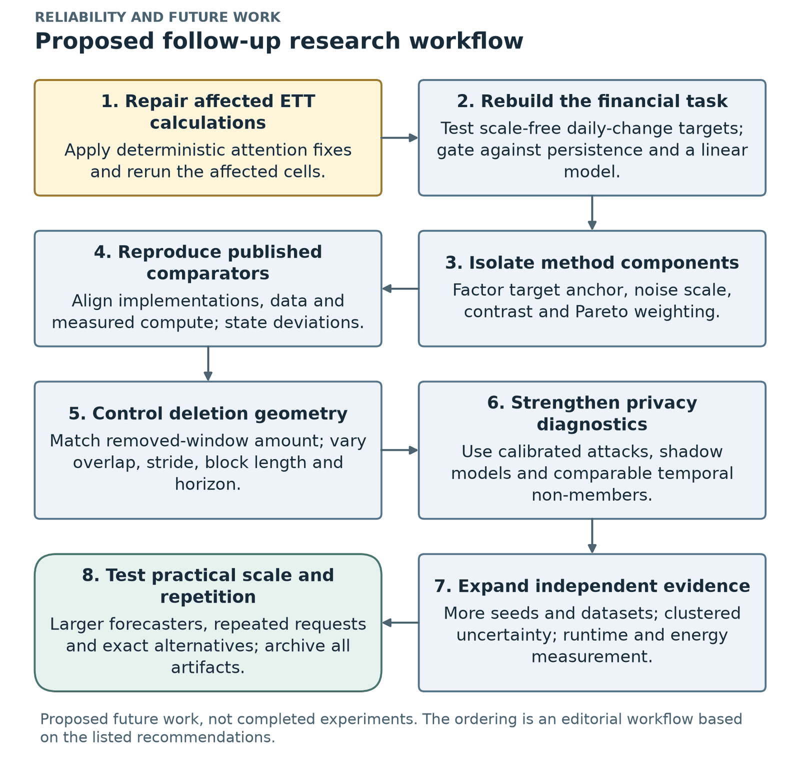

Chapter 10 of 13
Conclusion, contributions, limitations, future work and impact
Thesis Chapter 6 (Conclusion), Section 5.6 (Discussion) and Chapter 3 (Requirements, Impacts and Constraints)
10.1 The nine main findings (Table 6.1) #
| # | Finding |
|---|---|
| 1 | CP-FIM is stable and beats the direct-noise approach. Closer to retraining than the TS-Unlearn-inspired method in 56/56 settings (310/312 runs; median 12× closer), and closer than all five aggressive baselines in 56/56, also when they get the same update budget. |
| 2 | CP-FIM has a narrow observed test-error range: −1.8% to +4.4% in all 312 runs, while direct noise makes it ≥ 50% worse in 145 runs. It holds in all 44 settings unaffected by the defect. |
| 3 | Target anchoring is associated with stability. Removing the teacher anchor changes the result much more than changing the Fisher contrast or Pareto settings. |
| 4 | CP-FIM is conservative. Closer than doing nothing in only 22/56; retain fine-tuning is usually closer. The same anchoring that makes it stable keeps it near the original. |
| 5 | How data is deleted decides what can be measured. Random window deletion removes almost no unique information; block and time-stamp deletion remove much more. |
| 6 | Measures disagree. Prediction agreement can see effects that a loss-based membership test cannot. |
| 7 | Pareto-weighted distillation can stall. CP-FIM- and TS-Unlearn-type updates stop at the original model unless the weight is safeguarded (the retain gradient is zero at the start). |
| 8 | Financial price-level models are weak. Much worse than persistence; predicting scale-free daily changes reaches about persistence level in a limited pilot. |
| 9 | Retraining is cheap for small forecasters. Seconds to minutes; often the best practical choice at this model size. |
10.2 Contributions to the field #
flowchart LR
C1["1. A forecasting unlearning method<br/>with narrow observed utility change<br/>(CP-FIM: −1.8% … +4.4%)"]
C2["2. An explanation supported by ablations<br/>(target anchoring ↔ stability)"]
C3["3. A careful, repeatable evaluation<br/>vs retraining, retrain noise, persistence"]
C4["4. Evidence about deletion protocols<br/>+ a way to measure unique removed info"]
C5["5. Transparent limits<br/>(why conservative; why Pareto stalls)"]
C6["6. Practical recommendations<br/>for time-series unlearning evaluation"]
C1 --- C2 --- C3
C4 --- C5 --- C6
10.3 What it means in practice (six recommendations) #
- Define the deletion unit clearly. If someone asks to delete an observation, remove every window that uses it.
- Always compare with retraining, and with the natural variation between retrained models, not only with the original model.
- Do not judge unlearning by how large the forget error becomes. A very wrong model is easy to detect and often damages accuracy.
- If an approximate method is used, consider a teacher-anchored objective and clipped updates, as in CP-FIM, and verify utility empirically.
- Check forecasting models against a naive baseline before interpreting any unlearning result.
- For small forecasters, retraining is often cheap enough and gives the direct reference (though it is not a privacy certificate).
10.4 Limitations (stated as scope) #
| Limitation | What it means | Mitigation / where addressed |
|---|---|---|
| Stability ≠ successful removal | CP-FIM beats no-op in 22/56 and FT in 15/56; the high-capacity loss signal stays near the original | reported openly; future: oracle-informed targets |
| Attention-dropout defect | 12 standard-ETT settings (≈ 2,160 records) affected | reported separately; main result is 44/44 in unaffected settings |
| Financial forecasting validity | all financial price-level models lose to persistence | finance treated as descriptive; daily-change pilot |
| Comparator fidelity | M5, M6, M10 are adaptations, not the authors' code | named as adaptations; future: faithful reproductions |
| Deletion geometry | time-stamp deletion removes more windows than block, so shape and amount are not fully isolated | future: match removed amounts |
| Limited attack | loss-AUC is exploratory; no LiRA / shadow models | future: stronger attacks |
| Statistical independence | 3 seeds; shared models; related datasets | coarser-level reporting; nominal tails |
| Scope and cost | the regimes change 5 settings together; update-matched ≠ compute-matched; small models | stated |
| Data | survivorship bias in the 20-stock list; adjusted prices can change between downloads | stated; future: frozen versions |
| Reproducibility boundary | recomputing every prediction-based measure needs the saved prediction arrays | archive arrays, data versions, seeds |
10.5 Recommendations for future work #


- Re-run the standard-regime ETT settings with corrected gradients (dropout off, one attention path) to confirm the 12 affected settings.
- Rebuild the financial task first: the scale-free daily-change target across all datasets, architectures and seeds, with persistence and linear gates; frozen data versions; assets chosen without today's large-cap filter.
- Design for movement toward the oracle: forget targets informed by retained-data predictions; factorial ablations of anchor × noise × contrast × Pareto.
- Faithful published-method comparisons: original TS-Unlearn, SCRUB and Fisher-noise code; aligned budgets; measured compute.
- Control deletion amount and overlap: match the removed-window counts; vary block length, stride and horizon.
- Stronger privacy evaluation: LiRA, forecasting-specific attacks, shadow models, time-comparable non-members.
- More statistical and computational evidence: more seeds, unrelated datasets, cluster-level uncertainty, end-to-end energy, compute-matched budgets.
- Settings where approximate unlearning has a real role: larger forecasters, longer horizons, repeated requests, compared with time-aware sharding (SISA-like).
10.6 Final conclusion (thesis Section 6.5, paraphrased) #
To forecast-unlearn properly you need well-defined deletion units, useful base models and multiple evaluation signals. Random overlapping-window deletion may produce little measurable change; stronger block and time-stamp requests reveal a stability–forgetting trade-off. Across the recorded settings, CP-FIM is closer to retraining than the direct-noise adaptation, but it usually stays close to the original model.
10.7 Requirements, impacts and constraints (thesis Chapter 3) #
Final specifications and requirements #
- Load and validate 8 datasets; keep chronological order; disjoint train/val/test.
- Scale only on an early public prefix; apply dependency closure for time-stamp requests.
- Train original and retained-data reference models; apply all methods under shared dataset, request and seed settings.
- Record forecast errors, disagreement with the oracle, skill vs persistence, the membership signal and runtime.
- Save predictions, weights, traces and result tables; fixed seeds, data hashes, code fingerprints; resumable checkpoints; built-in self-tests.
- Stack: Python 3.11, PyTorch 2.11 + CUDA 12.8, NumPy, pandas, scikit-learn, Matplotlib, Jupyter, on an RTX 4070 Ti SUPER (16 GB).
- Compute: ≈ 74 GPU-hours = 9.6 h original models + 17.6 h retrained references + 47.2 h unlearning methods.
Societal impact #
- Positive: helps organisations explain what their removal process actually covers; retraining comparisons and transparent error reporting build trust in forecasting services (energy, finance).
- Risk: a weak diagnostic can create a false sense of safety if presented as proof that data is gone. Our AUC test is exploratory. The financial price-level models perform worse than persistence and must not be used for trading or investment.
Environmental impact (Table 3.1) #
| Activity | GPU-hours | Energy (kWh) | CO₂ (kg) |
|---|---|---|---|
| Recorded experiment | 74 | ≈ 30 | ≈ 18–21 |
Assumes ≈ 0.4 kW for the whole computer under load and ≈ 0.6–0.7 kg CO₂/kWh (estimates, not measurements). Small compared with LLM training. The findings can reduce future energy use: retraining these models takes only about 0.5–5.5 minutes, and the pipeline caches and resumes so no work is repeated.
Ethical issues #
- Public market and sensor data only; no personal records collected.
- Empirical measurements are clearly separated from legal or cryptographic guarantees.
- Cases where CP-FIM stays near the original are reported; known defects are disclosed.
- Survivorship bias is acknowledged; finance predictions are not offered as trading advice.
- Published methods are credited; local implementations are labelled as adaptations.
Standards #
- Data protection: GDPR Article 17 (right to erasure) is the legal motivation. The experiments do not establish legal compliance.
- Software practice: version-controlled notebooks, fixed seeds, recorded versions and data hashes, automatic correctness tests.
- Evaluation practice: time-ordered splits with purged boundaries (Cerqueira et al.); naive-baseline comparison (Zeng et al.).
Risk management (Table 3.2) #
| Risk | Level | Mitigation |
|---|---|---|
| Long runs interrupted (power cut, crash) | High | atomic checkpoints with backup; resume without retraining finished parts |
| Data leakage giving false results | High | public-prefix scaler; calendar splits; purged boundaries; automatic split checks |
| A closely related paper appears (TS-Unlearn) | Medium | re-framed to test a different question (indistinguishability, deletion protocols) |
| Software bugs | Medium | self-tests; bug log; remaining known issue disclosed |
| Not enough GPU time | Medium | batch benchmark, GPU caching, prioritised experiment order |
| Weak or negative results | Medium | an evaluation study that does not depend on one method winning |
Economic analysis (Table 3.3) #
| Item | Approximate cost |
|---|---|
| Electricity ≈ 30 kWh (BDT 8–12 / kWh) | ≈ BDT 240–360 |
| Equivalent cloud GPU (≈ 74 h at USD 0.5–1.0 / h) | ≈ USD 37–74 |
| Software | free (open source) |
| Data | free (public sources) |
Economic lesson: for forecasters of this size, exact retraining costs seconds to minutes (median 27–30 s standard, 110–326 s high-capacity), so it is both cheaper to build and more reliable than an approximate method that only partly imitates it.